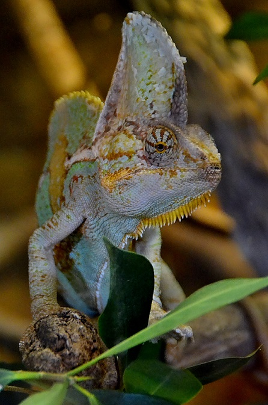

Chameleon
 The Chameleon is known to change color, move its eyes independently, and catch prey with their long sticky tongues. Rhythms of light, temperature, and humidity can affect the color of a chameleon, as can moods and emotions like fear and anger. Chameleons can be good companions, but they require specific care and handling.
Unlike a lot of popular pets, chameleons are not fast-moving animals that required a lot of attention to stay happy. Some people could see it as a write-off, because of difficult to keep, which is not always true. Providing good planning ahead, they can be excellent display pets. Usually a good enclosure with plants and branches to climb on, plus live food that they can hunt.
Unique ability to change colors to camouflage with their environment, regulate temperature, and communicate with other chameleons. Also, they do respond to excitement and stress. Most of the time with bright colors chameleons are happy, but feeling stressed out or sick can be dull, generally a dark brown to black.